いまさら Yubikey を試す
いまさら Yubikey を試す
子供達と自分のインフルパンデミックが終わって社会復帰しました。みなさん、インフルとは辛いものですね。
現在、自分は各種サイトのログインは 1passwordで管理してます。
そしてそれらで2FA とか割とちゃんと設定しています。2FAは面倒くさいなー、とは思いつつも、SMSで事足りてる感があったので特にそれ以上の事をやろうとは思っていませんでした。
というところに、諸事情がありYubikeyを試すことになりました。FIDO U2Fをやるための仕組みなわけですが、僕はプロトコルを説明されても「ふーん」でした。自分が分かるようにかみ砕くと、YubikeyおよびFIDO U2Fというのは（僕の認識では）平文の2FAを送りつけるより安全かつ簡単に2FAを行うのを助けてくれるデバイスです。
FIDO U2F Security KeyYubicoのFIDO U2F Security KeyはFIDO U2FプロトコルをサポートするUSBデバイスです。Security Keyはタッチするだけで、それぞれの消費者から、世界最大規…amzn.to
というわけで早速オーダー。ちなみにインフルにかかる直前にオーダーしてたんだけど、インフルのせいでこの記事を書くのが2週間遅れた。1個3000円くらい。Amazonでオーダーするとすぐ届きました。
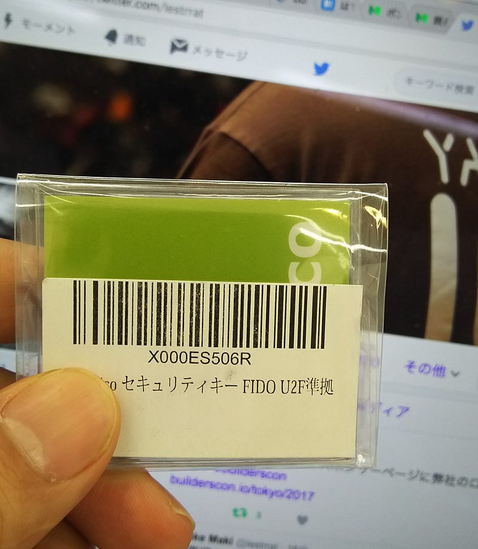
例のごとくでかめの袋に入って送られてきますが、開けてみると中身はこれだけ。
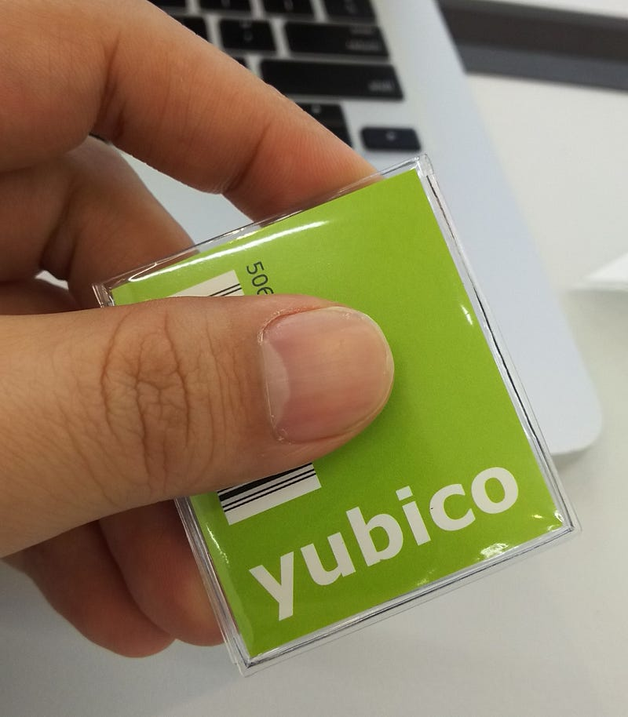
正直に言うと、この時点では不安感しかない。勝手な言い分だけど、やっぱり包装が簡易だと「これでいいんだっけ？」という不安が…。だけど過剰包装でも「えー」と思っちゃうし、正直この辺りの消費者心理は我が儘すぎる。まぁ今回一回買って大丈夫だったので次回また買うことがあっても安心して買いますけどね。
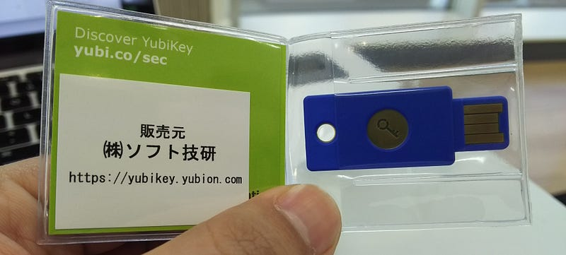
厚さ（目視）4mmくらいの製品が入ってるだけ。左側の部分に一瞬説明書が入ってるのかな？と思ったけど、ただの厚紙でしたね！まぁこれを使う人はWebで探せて当たり前なんでしょう。
ただ、ハッキリ言ってこのデバイス、なんも予備知識無しかつ自分みたいなハードウェアようわからん系の人がこれをそのままぽっともらっても「どこに入れるのかわからん」と言うのが正直な感想。経験知からこれは絶対にUSBポートに入る大きさだ！ってわかりますけど、分かりますけど…
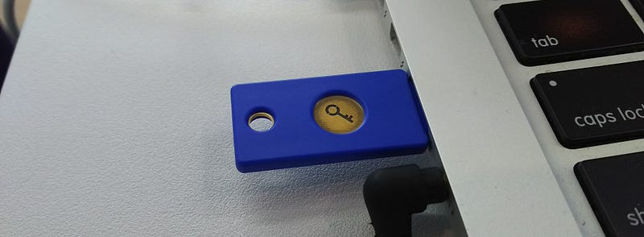
というわけでUSBに滑り込ませました。ちょっとカワイイ。
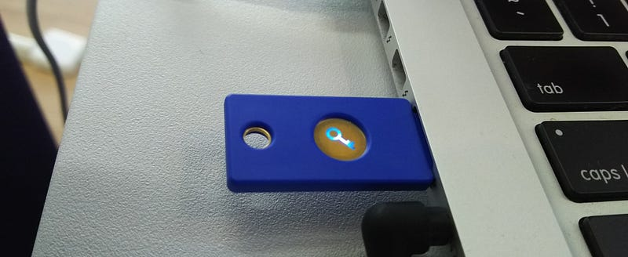
真ん中の鍵マークをタップすると光ります。これが「起動した」状態。この状態にするとFIDO U2F機能がなんかバーンとしてガツっとなってうまいことやってくれます。
ただ、もちろんこれだけでは光る以外何も起こりません。ダンジョンの外でリレミトを唱える感じです。何かを起こすためにはこの後このデバイスをサポートしているサイトと連携させる必要があります。
Google, Facebook, Githubを含む様々なサイトでこの規格はサポートされているので設定すればいいだけです。正直言うと、この手のデバイスを使う際に「もし設定に失敗したり、デバイスを無くしたりしたら超重要なアカウントからロックアウトされちゃうから嫌だなぁ」って不安に思って手を出していなかったんで、今回試すのにも一瞬躊躇しました。まぁでもGithubなら最悪データは全部あるから大丈夫だお、ということでGithubで試すことに。
Github連携の設定の仕方はここ。日本語の説明ないのかな？自分は必要ないけど、嫌がる人が多そうだ。
Knowledge Base How To How to Use Your YubiKey with GitHub Requirements Latest version of Google Chrome browser. GitHub…www.yubico.com
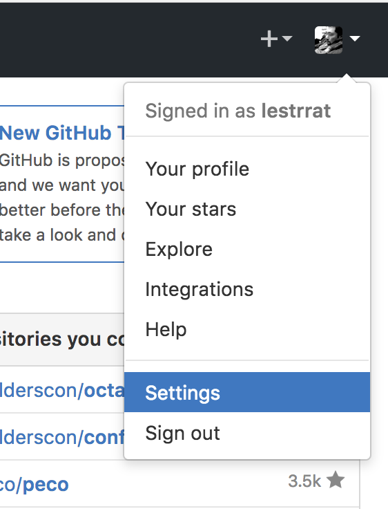
まずGithubでSettingsに行き…
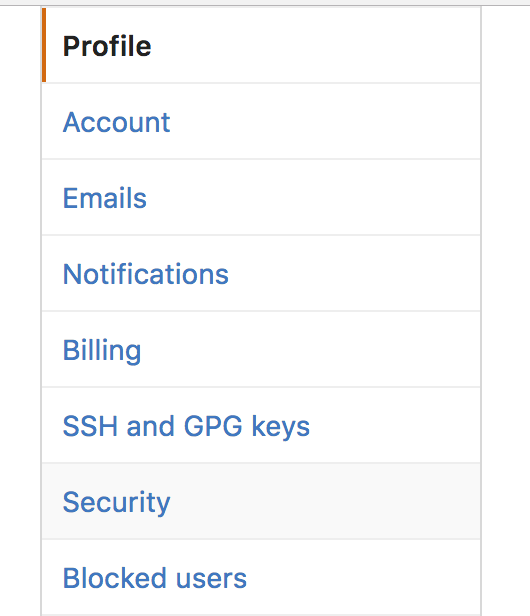
Securityに行き…
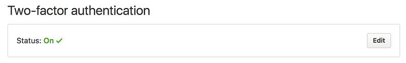
2FAの設定のところに行きます。もし2FAをすでに設定していない場合は設定しておいてください。2FA、色々意見はあると思うけど、設定しておいたほうがいいと思いますよ。
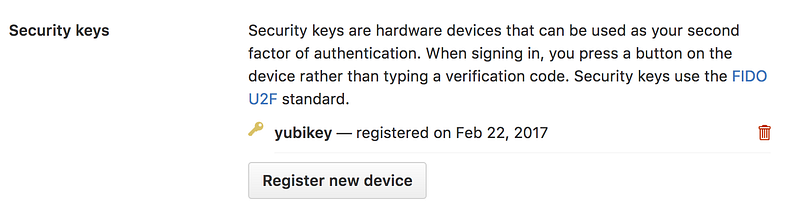
で、Security KeysというところでRegister new deviceをクリックします。デバイスをどうこうしろと言われるはずなので、Yubikeyを差し込んで、タップしてやると連携完了です。「え、これだけ？」って感じで終わります。心理障壁は割とたかかったけど、物理的な導入障壁は正直存在しない感じ。
さて、試したいですよね。ということでGithubにログインしてみましょう。今使ってるブラウザはすでにログイン済みだから違うブラウザを立ち上げてログインしてみようかな…
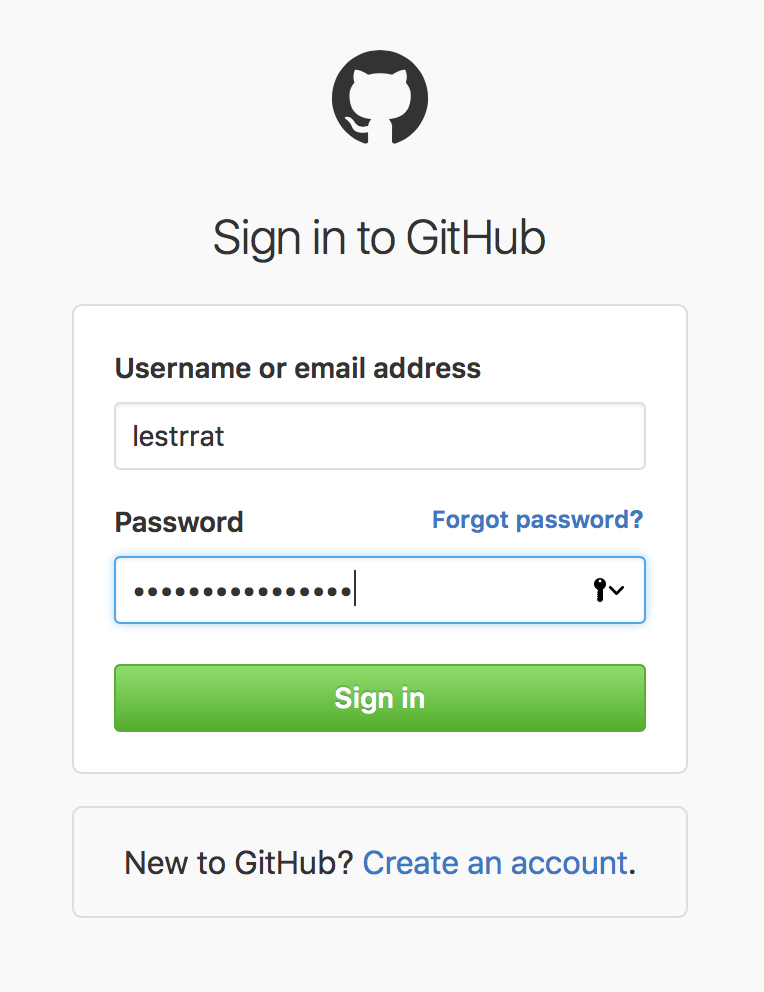
ログインしたら、携帯がブーブー言い出しました。あれ、2FAのコードが送られてる？そういうの無くすためのデバイスじゃないの？
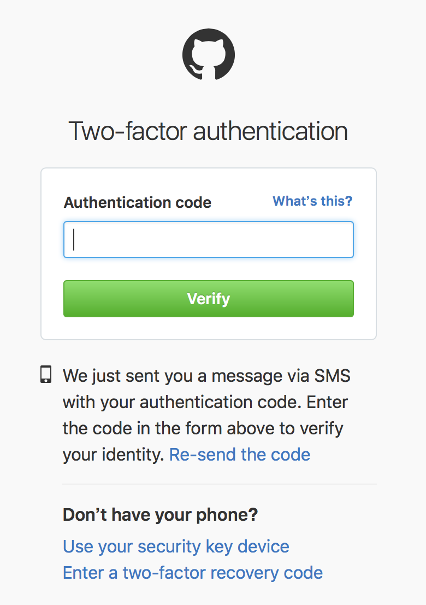
でもこの画面を見るとUse your security key deviceってあるので、きっとこれを使うと良いことがありそうです。クリックしてみると…
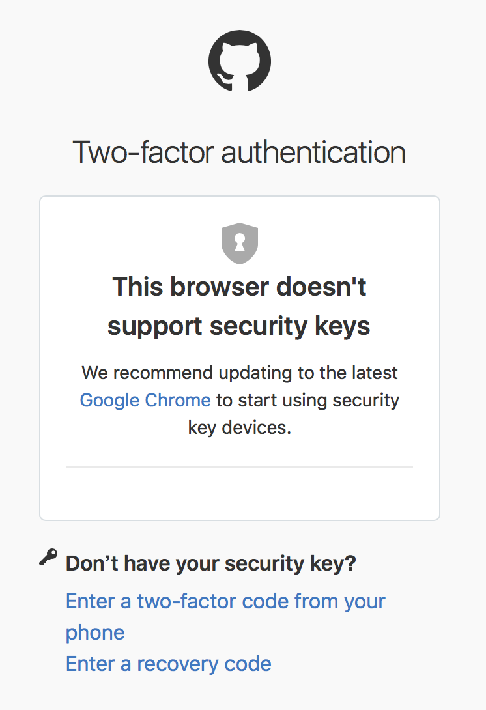
なんだと！Safariでは使えないのか！！！！！！そういえば、デバイスを登録する時の説明に「最新のChromeを使え」って書いてあったけど、そういうことか… しょうがないのでChromeでサインアウトしてそっちからやってみます。
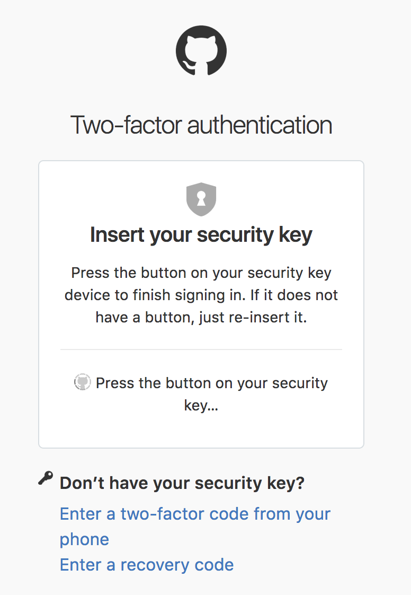
さて、Chromeでログインしてみました。お、なんか違うの出た！スマホもブーブー鳴りません。ここでYubikeyの鍵ボタンをタップします。そうするとするっとログインできた！
ちなみにEnter a two-factor code from your phoneをおせばいつものSMSが届くはずです。これでログインできることも確認できたので万が一Yubikeyを無くしてもロックアウトはない、というのはわかりました。
なるほど、これは便利。スマホが鳴らないというの、細かいけど割と嬉しいですね。
で、Yubikeyの利点を考えると、これデバイス自体にはなんの情報も入ってないので、Yubikeyを無くしてもサイト上の認証情報はわりと安全、というのがあります。スマホを無くすとわりと全部バレバレですけど。むしろ個人レベルより組織レベルで使うといいのかな、という気も。
使い終わったYubikeyはいつも持ち歩いている非常時用のUSBデバイスと一緒にしてみることにしました。これ、気になるのはポケットに入れっぱなしの場合にYubikeyの金属部分が劣化して読み取りができなくなるとかないかなーとかあるんですが、まぁとりあえずしばらく運用してみたいと思います。
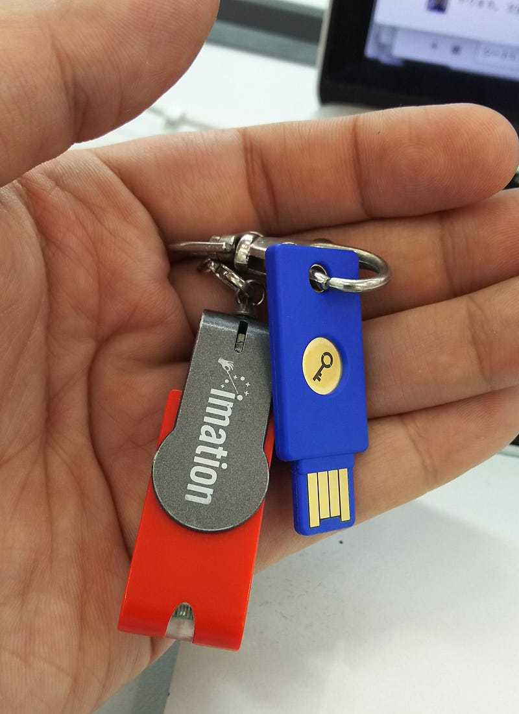
というわけで初Yubikeyレポートでした。セキュリティって難しいですよね。でも考える事を放棄してしまうとこれからの世の中本当に色々大変になる気がします。
なお、今夏開催のbuilderscon tokyo 2017では Cloudflare社でWebのセキュリティの最前線で体を張っているTrey Guinn氏が来てくれるので、乞うご期待！セキュリティ関連のセッションも一般から応募があるといいな〜。セッション公募は多分5月くらいからです！